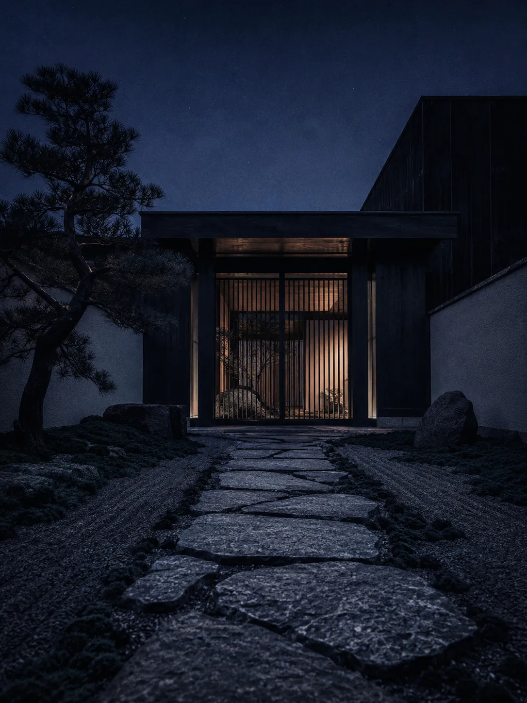
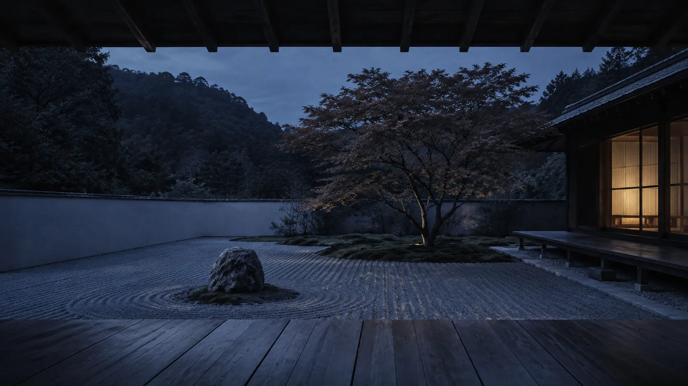
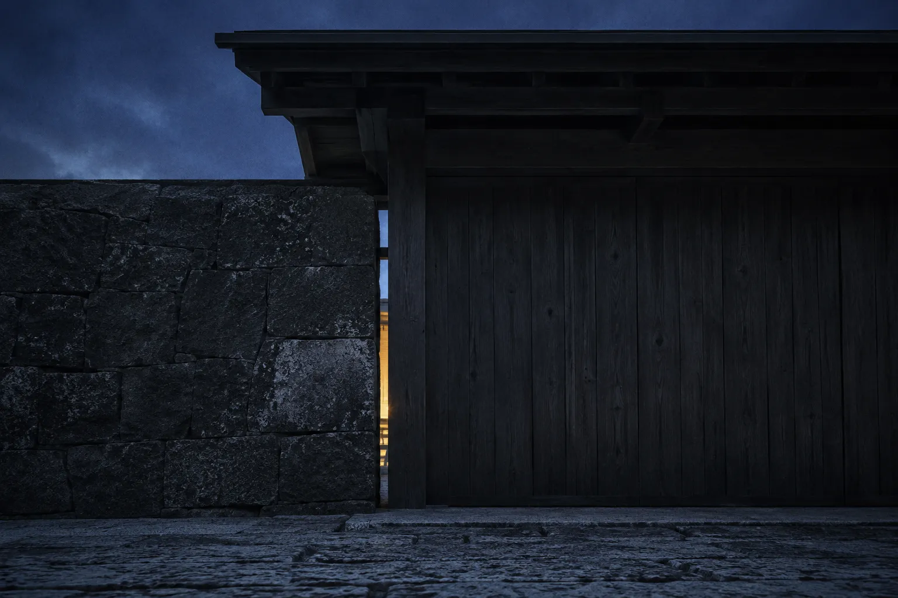

外構・エクステリア工事を、完璧に整えすぎない庭という思想で。
宍倉造園が、住まいの静けさをかたちにします。
庭は、完成した瞬間から変わり続けます。
私たちが目指すのは、隅々まで整えられた庭ではなく、
風雨や季節がそこに関わる余地を残した庭です。
苔むす石、経年で色を深める木部。
時間が味方になる庭は、住む人の暮らしに寄り添いながら、
何年たっても「今」の姿で在り続けます。
宍倉造園は、庭を"完成させる"のではなく、
住まいと共に育っていく余白を、設計します。


庭園設計・施工。敷地や建物の個性を読み取り、そこにしかない庭を一から設計します。図面の前に、まず現地の光と風を見ることから。
外構・エクステリア。アプローチ・塀・カーポートなど、庭と建築をつなぐ構造物を手がけます。素材の質感が、住まいの第一印象を決めます。
剪定・メンテナンス。植栽の手入れは庭を若く保つ作業ではなく、時間を味方につける作業です。季節ごとに、庭の声を聞きます。
まず敷地を見せてください。図面より先に、その場の光の入り方、風の抜け方、隣家との距離を確かめます。まだ決めていない段階でのご相談で構いません。
平面図と仕上がりのイメージ、費用の内訳をお出しします。納得いただけるまで描き直します。この段階で費用が合わなければ、遠慮なくお伝えください。
着工から完了まで、工程と進み具合をその都度お伝えします。現場で石や木の据わりを見ながら、細部は最後まで調整します。
庭は引き渡した日から変わり続けます。剪定や手入れのご相談は、そのあとも承ります。ここで終わりにしないための工程です。
図面を引くのも、石を据えるのも、その後の手入れに伺うのも同じ人間です。
だから、一度お話ししてから決めていただくのが一番確かだと考えています。
| 屋号 | 宍倉造園 |
|---|---|
| 代表 | ［代表者名］ |
| 所在地 | ［所在地］ |
| 事業内容 | 庭園設計・施工／外構・エクステリア工事／剪定・メンテナンス |
| 対応エリア | ［対応エリア］ |
| 連絡先 | ［電話番号］／［メールアドレス］ |
ご相談だけでも構いません。まだ何も決まっていない段階のご連絡が、いちばん良い庭になります。